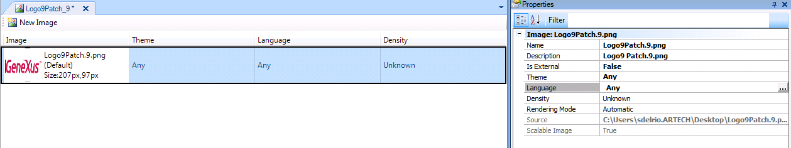
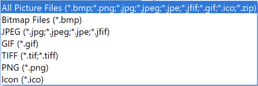

Stores an image inside the Knowledge Base. DescriptionImages are embedded objects in a GeneXus Knowledge Base. They hold the definition and the actual image(s) of an image that you can use anywhere you need in your Knowledge Base. Having images as objects in the Knowledge Base provides several benefits, including:
Creating an ImageAn Image can be created by selecting in the main GeneXus Menu: File > New > Object (or its shortcut keys Ctrl-N), but most of the time you will create a new image when you need to select one to fill the value of a property or anywhere you need an image. External ImagesThere may be images you do not "control". For example, you need to reference an image belonging to another company on the Internet, or you just want to share images between applications in your company. These are external images. They are basically the same as internal ones in terms of functionality, but the actual image is not stored in your Knowledge Base. Only its address (URL) is stored there. External and Internal ImagesInternal and external images are functionally the same. They can be used, referenced, etc. in the same way as preferences, Themes, source code, properties, etc. The difference is that, while the actual images of an Internal Image are stored in the Knowledge Base, the only thing that is stored for External Images is a reference to where the actual image should be. Internal Images are managed automatically, which means that you no longer need to worry about where the image should be in order for it to be available to your application either at design or runtime. Changes in the location of External Images must be handled manually. Managing ImagesThe Images node which is under the Customization node in the KB Explorer opens the Images tool window, which should look like the following image if the Detail view is the active one. It has several different views: List, Thumbnails, Tile, and Detail, which resemble Windows Explorer. A GeneXus Image is actually a container. It holds actual images used for each Language, Theme, Density, or combinations of all. See HowTo: Using different images depending on the theme, language and density of the screen 
This is great, as changing the current Language and/or the current Theme and/or Screen Density will change the actual images accordingly without any coding. This approach is commonly used in smart devices images (e.g. icons, launch and application images, platform depending). When a developer wants to add multiple images in the same Image object, there are two different ways to do it:
Changing images at runtimeThe actual image shown by a control may be changed at runtime using one of the following methods. FromImage(<ImageName>)Applies to Bitmap data type Variables and to Image controls. <ImageName> is the name of an Image object stored in the Knowledge Base. If &Bitmap is a bitmap data type variable the following code will change the image displayed by it to MyNewImage. &Image.FromImage(MyNewImage) FromImage(<StringExpression>)Applies to Bitmap data type Variables and to Image controls. <StringExpression> is an expression that must evaluate at runtime to the name of an Image object stored in the Knowledge Base. If &Bitmap is a bitmap data type variable and &Image is a character variable whose value is "MyNewImage", the following code will change the image displayed by it to MyNewImage. &Image.FromImage( &Image) FromLink(<StringExpression>)Applies to Bitmap data type Variables and to Image controls. <StringExpression> is a string expression that must evaluate to a valid image URL. This format is equivalent to the LoadBitmap function. Link()Applies to Image objects. It returns a string containing a link to the actual image for the current Language and Theme (if aplicable). For example: TableControl.Background = BackgroundImage.Link() Importing and Exporting ImagesImages are "standard objects". They can be exported and imported without any special consideration unless importing from previous versions as discussed here. As you can see, having images inside the KB improves GeneXus usability and Knowledge integration. Images used automatically by GeneXus and managed as image object in KBGeneXus applications use a set of image objects that are included in the Knowledge Base creation. All images in the GeneXus generated application can be modified using the associated Image object within the Knowledge Base. All images references can be found in the file images.txt file located in the model target path. Supported Image formatsYou can add images of any kind or format. Be careful to add to your KB only those that are supported by the target platforms (Browsers, Native apps, etc) Note: When you add an image using the IDE, the selector lets you choose an image file, filtering by the following file extensions:  Anyway, you can select an image of any file extension by using the common '*.*' filter in the 'File name'. Furthermore, the IDE shows previews and information like the size, of images with a format that is supported by the .NET Framework (ref), but this does not limit you to these formats. The image format is only limited by the target platform. For example, if you choose an SVG, the IDE won't preview it, but the browser will support it. (The SVG format is still not supported by the Native Mobile Generator.) See also |